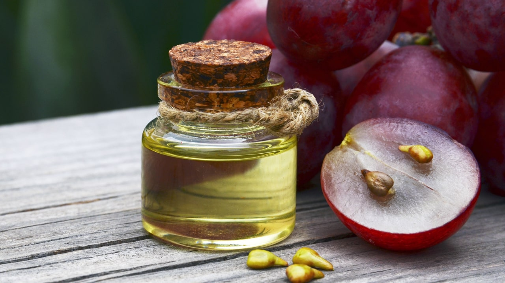

In most countries in Europe and North America, dried grapes are referred to as "raisins" or their local equivalent. Raisins are any dried grape, usually seedless varieties. Nowadays, there are many ways to get raisins. Traditionally, to obtain raisins, grapes are laid out in one layer in a lighted, well-ventilated place. Drying times can be 14, 20 or even 30 days. To speed up this process, wax deposits are first removed from the grapes. This can be achieved by placing the grapes in boiling water for a few seconds. At the same time, microcracks form on the skin of the grapes, which also speeds up the drying process.
Making grape juice at home is easy. First, the grapes are washed and peeled from the stalks. To produce small amounts of juice, use a mechanical or electric juicer, meat grinder, blender, or food processor. To obtain a large amount of grape juice, hand presses are used. Juice obtained from a press or an electric juicer can be drunk immediately. In other cases, juice from crushed berries or the resulting gruel should be drained using a sieve or gauze. Freshly squeezed juice is not stored for a long time. It can be stored by subjecting it to heat treatment, pouring it into a sterilized container and sealing it tightly. The juice should be kept cold.
Wine is an alcoholic drink obtained by full or partial alcoholic fermentation of grape juice. To obtain natural fermentation, grapes should not be washed before juicing, as they contain natural yeast. Then the resulting juice should be filtered to separate the mash (grape solid particles) from the juice. During the production of red wine, the pulp is not separated. The resulting juice is poured into containers with a water seal to prevent the access of oxygen from the air. Grape juice is fermented at 20-30 degrees Celsius for 4-10 days. After that, the resulting wine can be bottled or poured into oak barrels for further aging.
Vinegar is obtained by fermenting wine with air access. Therefore, it doesn't take much effort to make vinegar. Most wines that are stored for a long time turn into vinegar over time, as it is impossible to completely isolate the wine from the oxygen in the air. When getting vinegar at home, you must adhere to several rules:
Grape seed oil is a vegetable oil derived from the seeds of grapes. A by-product of the winemaking industry, it is typically used for edible applications. Due to its clean, light taste, and high polyunsaturated fat content, it may be used as an ingredient in salad dressings and mayonnaise and as a base for oil infusions of garlic, rosemary, or other herbs or spices. It is widely used in baked goods, pancakes, and waffles. It is sprayed on raisins to help them retain their flavor.
